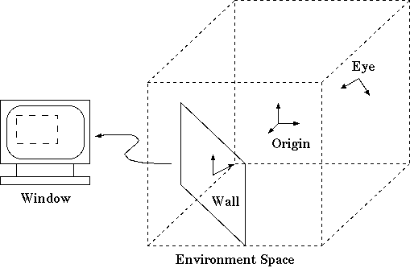

There are several co-ordinate systems or spaces. We need to consider. There is world space which is the co-ordinate system of the virtual world. There is environment space which is the physical real-world co-ordinate system of the virutal environment. It is in this system that screens, input devices, the user, etc. are located. We may at times discuss eye space which is the view of the world from the perspective of the camera or viewer and screen space which is the view of the world from the perspective of the screen onto which the image is rendered. In discussing spaces, we refer to their base as a frame. A frame relates one space to another. The frame of the environment is expressed in world space co-ordinates, and thus relates the environment to the world. The frame of the eye is expressed in environment space co-ordinates and thus relates the eye to the environment. Note that we must combine frames in order to relate the eye to the world - frames are unique to a relation between two co-ordinate spaces, not to a paritcular space.
By altering the environment's frame, you can move the envrionment through the virtual world. This is typically how one would simulate vehicle motion - i.e. motion independent of the user's movements within the environment. An eye frame typically represents the user's location within the environment. This information is critical to generating the correct projections of the world on the walls.
A frame is defined as a set of three vectors: loc, which is the origin of the space, dir, which is a vector parallel to the negative z-axis of the space, and up, which is a vector parallel to the positive y-axis of the space.